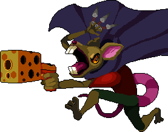

Enter the Gungeon
Enter the Gungeon is a bullet hell dungeon crawler game that consists of difficult bosses as well as fun gameplay. The game itself is overall simple and easy to understand... Until you reach around the end of the game and realize that there's more to the game than it seems. The reason is that finishing the game normally covers about less than half of the full experience of the game. There's many secrets as well as weapon synergies you will have missed out on your first finished run. And one of the secrets is a Boss called The Resourceful Rat. There's many factors that make this Boss excruciatingly difficult. First of all reaching the boss itself is a chore in which I won't be covering in this webpage. But the boss itself has 3 phases with unique gameplays. The worst part is if you lose, you have to start the whole gameplay all the way from the beginning.